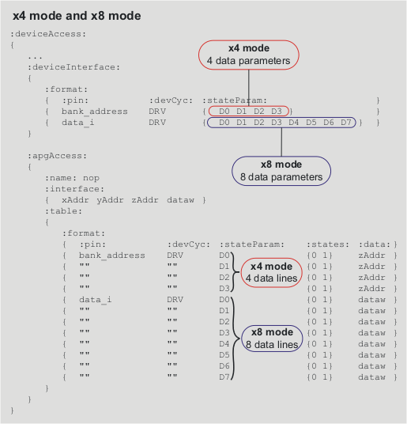

Setting up the x4 and x8 modes in the device access file
In the x4 and x8 modes, each device access covers four or eight test system cycles, respectively. (Four data bank_address definition (D0 - D3) and eight data data_i definition (D0 - D7), see following figure).
